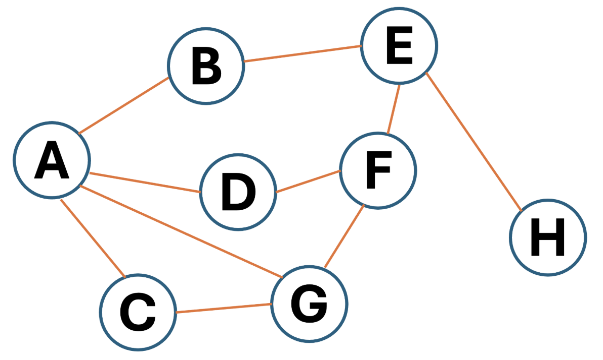

enqueue operation on a circular queue.
Check if the queue is full, with (rear_pointer +
1) % size ==
front_pointer. If it is, throw an error.
Otherwise, set rear_pointer to
(rear_pointer + 1) %
size.
Insert the item into the array at the index indicated by the new value of
rear_pointer.
 Diagram 1
Diagram 1

A programmer wants to implement two functions in his text-based software: undo
and repeat.
The undo function will change the state of the text to how it was before the
user's most recent action (e.g. changing a font) was carried out. The repeat
function will apply the user's most recent action again.
undo and repeat functions can be implemented using a single stack.
A stack can be used to store the user's actions.
Each time an action is completed it is pushed to the top of the stack.
The undo function will pop the top item from the stack.
The repeat function will peek at the top of the stack.
[2, 3] and [-1, 5].
Dot product = 13
Lengths are √13 and √26
cos(θ) = 1 / √2
θ = 45°